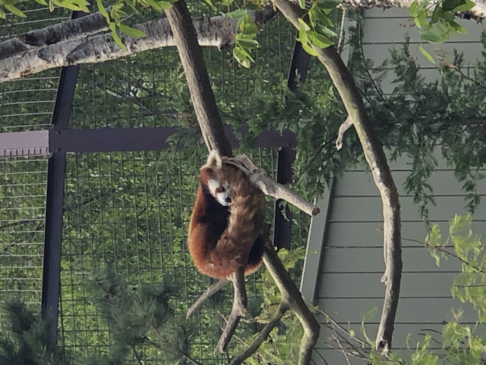
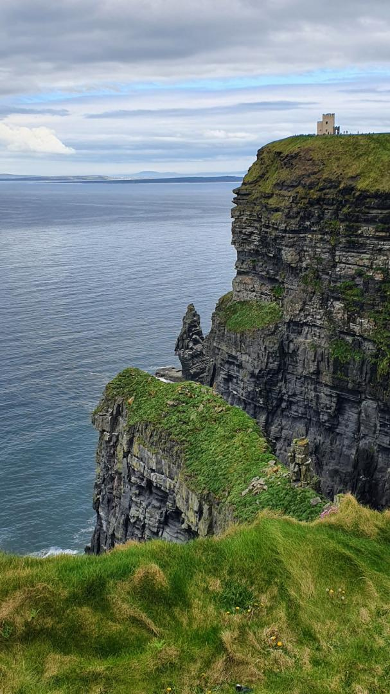
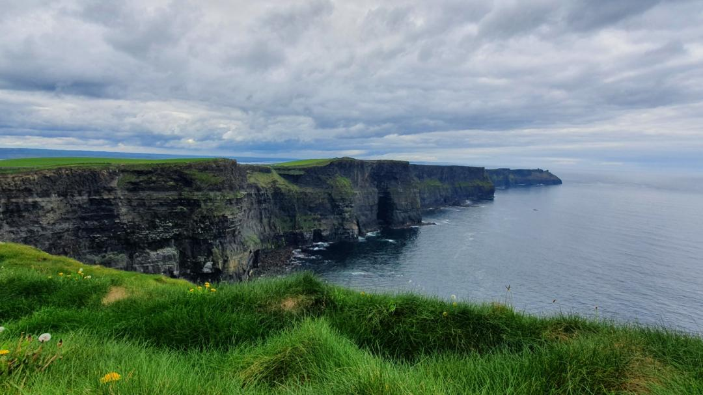

In April 2022, I had the opportunity to spend two and a half months in Tallaght, Ireland in order to do my DUT internship. It was an amazing experience full of emotions.
Here is a summary.
1 - Why did I go in Ireland?
In order to obtain the DUT diploma, it is mandatory to do a two and a half month internship in a company. I At the time when I was looking for a place that hires interns, my English teacher told me about an engineering school in Dublin that could welcome me during this period of time.
I did not hesitate for a second and accepted the offer immediately.
I really wanted to go to Ireland for multiple reasons:
• Being in an entirely English environment to improve both in writing, but mainly in spoken English.
Fun story: The first time I met with my supervisor, he talked for over an hour and a half about my internship, my future project, the school... and I could only understand ~40% of what he was saying. His Irish accent was pretty strong, but it was mostly because I was not as good as I am today, and I have improved a lot since that thank to this internship.
• Work on a project I was not familiar with
I did my DUT in computer science and this internship was more about electronic engineering. And even if I was a bit scared in the beginning about the fact that I knew almost nothing about it, it ended up being a very interesting project where I worked on on-board computing but also 3D-printing and even Machine Learning AI.
• The country seemed very nice
And I was right!
I visited Dublin during the weekends and I went to the Zoo which was awesome.

A red panda taking a nap
But I also went to the west coast to look at the cliffs of Moher and once again, it did not disappoint me.


It does not look like so, but the cliffs are actually more than 200 meters high